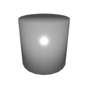
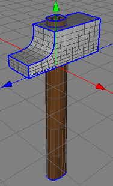
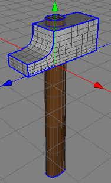
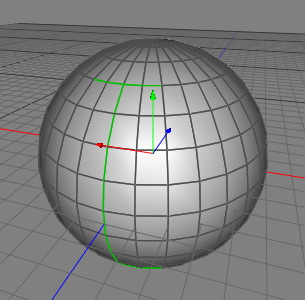
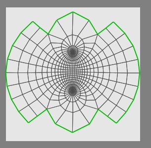
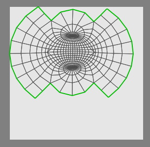

ポリゴンオブジェクト
ポリゴンオブジェクトは、Cheetah3D のシーンで表面を持つすべてのオブジェクトの元になるものです。パラメトリックポリゴンオブジェクトと、クリエータオブジェクトは、このオブジェクトに属します。このヘルプファイルでは、ポリゴンオブジェクトから派生した他のオブジェクトと混同しないように、このポリゴンオブジェクトは、しばしばロウ・ポリゴンオブジェクト (a raw Polygonobject) と呼ばれます。ポリゴンオブジェクトは、三角形（３点）、四角形（４点）と、多角形（ N 点、自然数 N）で構成されます。
注意！ ポリゴンオブジェクトは、ポリゴンツールでメッシュを編集できる唯一のオブジェクトです。その他のオブジェクトのメッシュを編集したい場合は、最初に編集可能に（ "編集可能にする" を実行）しなければなりません。
（訳注：下の画像の 'Info' 欄は、現バージョンでは削除されています。ポリゴン数やポイント数を確認するには、"オブジェクト情報を見る" を使用します。）

メニューコマンドから "オブジェクト ポリゴンオブジェクト
ポリゴンオブジェクト ポリゴンオブジェクト" を選択することによって、直接ポリゴンオブジェクトを作成する事ができます。このオブジェクトは空で、 ポイントやポリゴンを含んでいません。ポイントを挿入ツールを使用して、オブジェクトにポイントを挿入する事ができます。その後で、ポリゴンの作成ツールや帯状ポリゴンの作成 ツールを使用して、これらのポイントを繋いでポリゴンメッシュを作成できます。
ポリゴンオブジェクト" を選択することによって、直接ポリゴンオブジェクトを作成する事ができます。このオブジェクトは空で、 ポイントやポリゴンを含んでいません。ポイントを挿入ツールを使用して、オブジェクトにポイントを挿入する事ができます。その後で、ポリゴンの作成ツールや帯状ポリゴンの作成 ツールを使用して、これらのポイントを繋いでポリゴンメッシュを作成できます。
（訳注：現バージョンでは、ポリゴンの作成ツールで、直接ポリゴンを作成していけるので、あらかじめポイントを作成しておく必要はありません。また、帯状ポリゴンの作成ツールは、ポリゴンの作成ツールに統合されています。）
またパラメトリックポリゴンオブジェクト（立方体、球体、など）や、クリエータオブジェクト（ブーリアン、旋盤、など）を元に作成する事も可能です。ただ、これらのオブジェクトのメッシュは、そのままでは編集できる状態ではありません。ポリゴンツールで直接このメッシュを編集したい場合、オブジェクトを編集可能にしなければなりません。このオブジェクトを選択し、メニューコマンドから "オブジェクト 編集可能にする" を選択する事で、これができるようになります。パラメトリックポリゴンオブジェクトや、クリエータオブジェクトは、設定可能なパラメータを失い、編集可能なロウ・ポリゴンオブジェクトに変化します。
編集可能にする" を選択する事で、これができるようになります。パラメトリックポリゴンオブジェクトや、クリエータオブジェクトは、設定可能なパラメータを失い、編集可能なロウ・ポリゴンオブジェクトに変化します。

オブジェクトブラウザでオブジェクトアイコンをダブルクリックする事で、パラメトリックオブジェクトを編集可能にする事も可能です。
Normals（法線）
すべてのオブジェクトには、"スムース" というグループのプロパティがあります。これらのプロパティで、法線計算のアルゴリズムをコントロールする事ができます。
-
タイプ:
- フラット: ポリゴン面の各頂点の法線は、ちょうどポリゴン面の法線になります。
- フォン: すべてのポリゴンの角の法線は、そのポイントを共有するすべてのポリゴンの法線の平均によって計算されます。このアルゴリズムが望ましくない不自然な結果を生み出すかもしれないので、注意してください。（下の図を参照してください。）
- コンストレイン: 各ポリゴンが作る２つの平面の角度が設定より小さい場合に、そのポリゴンの法線を平均します。この操作は、フォンの設定より計算にコストがかかります。必要な場合のみ使用するように注意してください。
- スムースアングル: コンストレインの場合の計算に使われる角度を決定します。この値を変えて遊んでみてください、ポリゴンオブジェクトへの効果がすぐに解るでしょう。

フォンに設定した円柱（左）コンストレインに設定した円柱（右）
Creases（ハードエッジ）
ハードエッジは、サブディビジョンで表面が滑らかに分割される場合に鋭い部分を作ります。Cheetah3D では、エッジモードでエッジを選択し、メニューコマンドから "選択 ハードエッジの設定/解除" を選択する事で、メッシュのエッジにハードエッジとして印を付ける事ができます。 ハードエッジをとして印を付けられたエッジは、エッジモードで（もしそれが選択中でなければ）青く表示されるでしょう。ハードエッジの印を外すためには、この "選択
ハードエッジの設定/解除" を選択する事で、メッシュのエッジにハードエッジとして印を付ける事ができます。 ハードエッジをとして印を付けられたエッジは、エッジモードで（もしそれが選択中でなければ）青く表示されるでしょう。ハードエッジの印を外すためには、この "選択 ハードエッジの設定/解除" コマンドを再度使用します。細分化 キャトマルクラークやサブディビジョンモディファイアを使うと、印を付けられたエッジモードはハードエッジとして操作されます。どのようにハードエッジが細分化 キャトマルクラークに影響するかの例として、下のイメージを見てください。
ハードエッジの設定/解除" コマンドを再度使用します。細分化 キャトマルクラークやサブディビジョンモディファイアを使うと、印を付けられたエッジモードはハードエッジとして操作されます。どのようにハードエッジが細分化 キャトマルクラークに影響するかの例として、下のイメージを見てください。
 

Seams（切れ目）
切れ目は、UV 展開ツールでポリゴンオブジェクトの UV を展開するために使われるエッジです。例えば、球体を UV 展開したい場合にはUV 展開ツールがどこで閉じたポリゴンメッシュの UV マップを分割するのかわかるように、切れ目を割り当てなければなりません。そうでなければ球体の UV マップは、展開されずにただ押しつぶされたようになるでしょう。
切れ目は、3D ビューと UV エディタで緑色でハイライトされます。選択されたエッジの切れ目の印を付ける／外すには、"選択 切れ目の設定/解除"コマンドを使います。
切れ目の設定/解除"コマンドを使います。
 
Pinned UV（UV ピン）
UV ピンは、UV 展開ツールで変更されない UV 座標です。またこれらは、UV 展開ツールの結果に影響します。特に切れ目や UV ピンとして設定されたポイントは、展開された UV メッシュを、望むような形に伸ばすヒントになるでしょう。選択されたポイントを UV ピンとして設定するには、UV エディタでコンテキストメニュー（右クリックメニュー）の "UV ピンの設定/解除" コマンドを使います。UV ピンのポイント座標は黄色でハイライトされます。
 
左は UV ピンを使わずに展開された球体の UV マップ
右は 4 つの UV ピンを使って展開した結果
複数のポリゴン選択セット
すべてのポリゴンオブジェクトは、全部で 16 の独立したポリゴン選択セットを持っています。プロパティのポリゴン選択セットで、これらの選択を切り替える事ができます。
これらの複数のポリゴン選択セットは、通常１つのメッシュ（ポリゴンオブジェクト）に複数のマテリアルを割り当てるために使用します。（上のCreases（ハードエッジ） のイメージのように）茶色のマテリアルを "ポリゴン選択セット - 1" へ、灰色のマテリアルを "ポリゴン選択セット - 2" へ適用する事ができます。メッシュ（ポリゴンオブジェクト）ごとに複数のマテリアルを使用する方法については、マテリアルの項目も参照してください。
ポリゴンツールは、常に現在のポリゴン選択セットを使用します。通常は、ポリゴンツールによってポリゴン選択セットの選択範囲が変更される事はありません。（訳注：ポリゴンの数を変更するようなツールについては、それぞれのオプションを確認してください。）
プロパティ
- ポリゴン選択セット: アクティブなポリゴン選択範囲の番号
- polygons: メッシュの三角ポリゴンと四角ポリゴンの数
- points: メッシュのポイント数
（訳注：現バージョンでは、プロパティ欄にポリゴン数、ポイント数の情報は表示されません。これらの情報を確認するには、"オブジェクト情報を見る" を使用してください。）